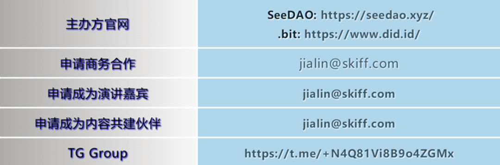

4 月 16 日，由 SeeDAO 与 .bit 联合主办的“DAO HongKong 机遇与变革：连接东西方 DAO，探索 Web3 未来”将在香港康得思酒店（Cordis Hotel）宴会厅精彩呈现。
截至 4 月 6 日，确定参与活动的嘉宾有：
SeeDAO 联合发起人唐晗； .bit 创始人（Tim Yeoh）； Orange DAO 的高级风险投资合伙人 Thomas Wong； Gitcoin DAO 核心贡献者 Bob Jiang； SeeDAO 联合发起人白鱼； Polygon Labs DAO 生态发展核心成员 0xjustice； NounsDAO KOL、Web3 随意门发起人屏风； comupage 发起人、社会学学者 Dr.Sun； BlockchainGov 研究员 Sofia Cossar； Kleros Cooperative、HKU 研究员 Abeer Sharma； Web3 研究员、FWB 和 SeedClub 贡献者王超； Mail3 创始人 Cypher； DAO+ 核心贡献者、Foresight研究员Will； Wonderverse 联合创始人 Andros； DeSchool 联合创始人 Rebecca； Voty 核心贡献者 Arvin； .bit 社区 OG punk.bit； SuperDID 创始人房宋； Genius Club 联合创始人 Jocab； PolyU Blockchain Club 联合创始人 Harvey； 0xU Hong Kong Blockchain Club 主席 Jack Dawson
等 30 余位行业领袖、投资者、监管者、专家、学者为代表确认担任此次活动的演讲嘉宾。
长期以来，亚洲的 DAO 与西方的 DAO 缺乏深入交流，各自在自己的文化背景下进行着 DAO 的探索和尝试。为了促进东西方之间 DAO 组织的实践探讨与合作，借万向区块链在香港举办 Web3 峰会之际我们邀请东西方的 DAO 实践者齐聚一堂，共同探讨行业现状和方向，促进彼此的沟通和了解。
出席此次活动的演讲嘉宾将围绕 DAO 的核心议题分享 DAO 组织的变革与发展机遇，从 DAO 的实践和治理、商业模式、最新发展、应用、工具、市场趋势、投资等多个角度展开深入对话。
（1）DAO 的治理与演进； （2）人在 DAO 中的意义； （3）DAO 的商业化； （4）DAO Tool 的构建理念与最新进展； （5）Gen Z与 DAO。
与这 5 个板块相匹配，现场还将设有五场圆桌对谈。
想要参与此次盛会的朋友请于 4 月 15 号之前注册我们的活动，以便后续接收此次活动联合主办方 .bit 发放的的纪念空投 DAOHK.bit 的子账号一份。注册完成后，您将收到邮件一封。该邮件会用于在活动现场检票使用。
除了干货满满的演讲嘉宾和活动现场的纪念空投，后续还将有更多惊喜，你还在等什么呢？赶紧扫描下方二维码报名吧！
扫码立刻报名
